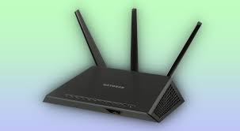

Macintosh
Línea de computadoras personales fabricadas por Apple, con su propio sistema operativo macOS.
Mainframe
Computadora de gran tamaño y alta capacidad de procesamiento, utilizada por grandes empresas y gobiernos para manejar grandes volúmenes de datos.
Megabyte
Unidad de medida de almacenamiento de datos, equivalente a 1024 kilobytes (KB).
Memoria caché
Memoria de acceso rápido que almacena datos temporales para mejorar el rendimiento del procesador.

Microprocesador
Chip central en una computadora que ejecuta instrucciones y procesa datos. Es el "cerebro" del sistema.
Módem
Dispositivo que convierte señales digitales en analógicas y viceversa, permitiendo la conexión a Internet mediante líneas telefónicas.
Mouse
Dispositivo de entrada que permite mover un cursor y seleccionar elementos en la pantalla de una computadora.
MP3
Formato de compresión de audio que reduce el tamaño de los archivos de sonido sin pérdida significativa de calidad.